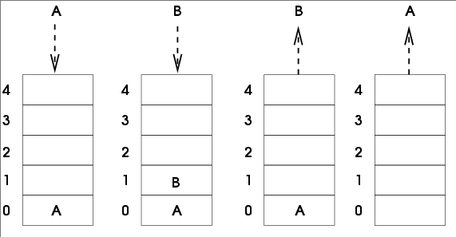

Piles et files#
Piles (Stack)#
Définitions#
On retrouve dans les piles une partie des propriétés vues sur les listes. Dans les piles, il est uniquement possible de manipuler le dernier élément introduit dans la pile. On prend souvent l’analogie avec une pile d’assiettes : dans une pile d’assiettes la seule assiette directement accessible et la dernière assiette qui a été déposée sur la pile.

Les piles sont basées sur le principe LIFO (Last In First Out), c'est-à-dire que le dernier rentré sera le premier à sortir.
En, informatique, la structure de pile est très présente. Une pile peut être utilisée pour stocker de l’information, que ce soit au niveau du processeur ou au niveau de programmes ou d’application. La programmation récursive nécessite l’utilisation d’une pile. Un navigateur ou un traitement de texte mémorise les actions effectuées afin de revenir en arrière pas à pas. Les pages ou les fichiers ouverts sont également mémorisés. Une pile peut être nécessaire au calcul d’expression mathématique suivant la notation utilisée (exemple la notation polonaise et la notation polonaise inversée)
Interface des piles#
Voici les opérations que l’on peut réaliser sur une pile :
- on peut vouloir créer une pile vide (
Creer_pile) ; - on peut savoir si une pile est vide (
est_vide) ; - on peut empiler un nouvel élément sur la pile (
empiler) - on peut récupérer l’élément au sommet de la pile tout en le supprimant. On dit que l’on dépile
(
depiler) ; - on peut accéder à l’élément situé au sommet de la pile sans le supprimer de la pile (
sommet). - on peut connaitre le nombre d’éléments présents dans la pile (
taille).
Implémentation en python#
Exercice 1 :
Implémentez avec les listes une classe Pile et ces 5 opérations.
Réponse
Files (Queue)#
Définitions#
Comme les piles, les files ont des points communs avec les listes. Différences majeures : dans une file on ajoute des éléments à une extrémité de la file et on supprime des éléments à l’autre extrémité. On prend souvent l’analogie de la file d’attente devant un magasin pour décrire une file de données. Les files sont basées sur le principe FIFO (First In First Out), c'est-à-dire que le premier qui est rentré sera le premier à sortir.

Ici aussi, on retrouve souvent ce principe FIFO en informatique notamment dans la gestion des processus. On les retrouve également pour un imprimante qui gère une file de documents en attente d’impression.
Interface des files#
Voici les opérations que l’on peut réaliser sur une file :
creer_filepour créer un filer vide.est_Videpour savoir si une file est videajoutpour ajouter un nouvel élément à la fileretirepour récupérer l’élément situé en bout de file tout en le supprimantpremierpour accéder à l’élément situé en bout de file sans le supprimer de la filetaillepour connaitre le nombre d’éléments présents dans la file
Implémentation en python#
Exercice 2 :
Implémentez en Python avec les listes une classe File et ces 5 opérations.
Réponse
Exercice 3 :
Faire une classe pile et une classe file à l'aide des listes chaînées.